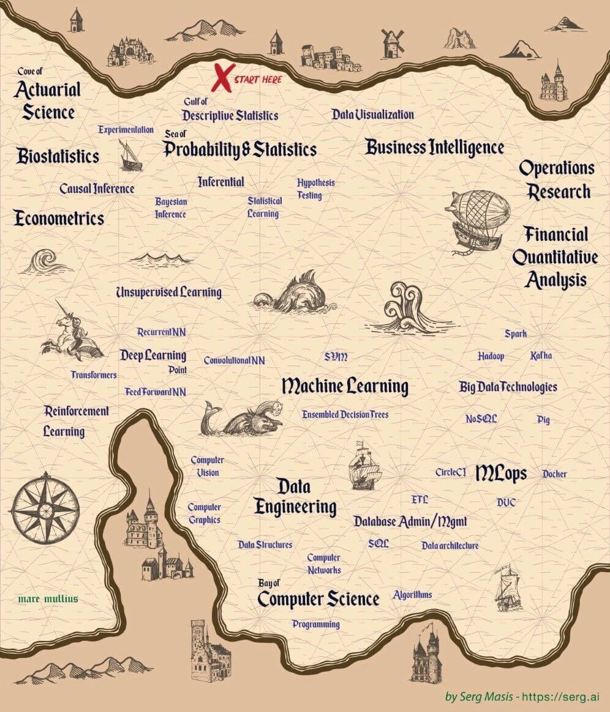

Ciência e Análise de Dados | Pesquisa Operacional | Aprendizado de Máquina
Meu nome é João Vitor Pinheiro da Costa (Vitor em ambientes com muitos João's ou 白玉龙), sou estudante de Tecnologia da Informação desde o ensino médio-técnico em Informática. Graduando em Engenharia de Produção, desenvolvi grande interesse pela área de Dados devido ao gosto pelas técnicas de otimização e tomada de decisão aprendidas em Pesquisa Operacional. Desde então tenho desenvolvido um plano de estudos dirigido através dos diversos canais formais e informais disponíveis pela internet. Atualmente, sou estagiário de Ciência de Dados em uma empresa de consultoria que possui atuação em projetos que envolvem gestão, tecnologia e analytics integrados. Grande parte dos meus estudos estão documentados em aplicações no meu Github